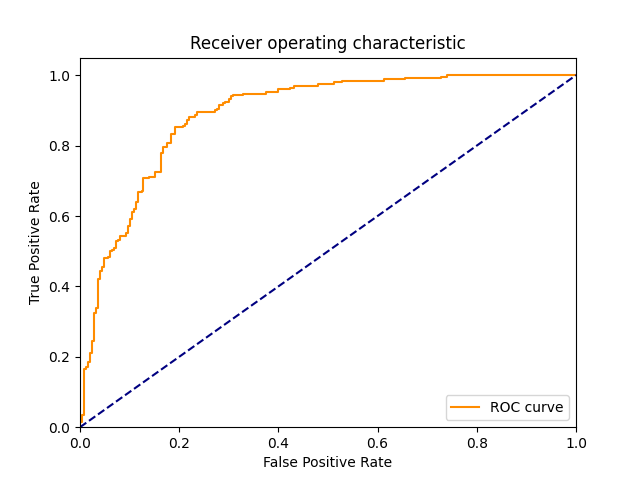
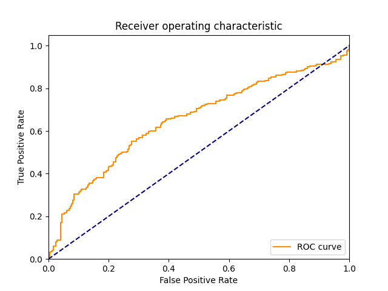

| 8 |
NonLinearSVM |
Non Linear Support Vector Classification |
163.774657 |
149.852558 |
215 |
199 |
51 |
35 |
0.860 |
0.796 |
0.808271 |
0.828 |
0.172 |
0.833333 |
1.327289 |
0.005088 |
0.005561 |
|
|
|
| 1 |
RealBoost |
An RealBoost classifier |
4299.135281 |
0.130370 |
207 |
203 |
47 |
43 |
0.828 |
0.812 |
0.814961 |
0.820 |
0.180 |
0.821429 |
1.293766 |
0.000191 |
6.300765 |
|
 |
 |
| 7 |
LinearSVM |
Linear Support Vector Classification |
634.629867 |
1.261374 |
205 |
204 |
46 |
45 |
0.820 |
0.816 |
0.816733 |
0.818 |
0.182 |
0.818363 |
1.285705 |
0.001290 |
0.648787 |
|
|
 |
| 6 |
KNeighborsClassifier |
Classifier implementing the k-nearest neighbors vote |
0.252529 |
10.276781 |
211 |
193 |
57 |
39 |
0.844 |
0.772 |
0.787313 |
0.808 |
0.192 |
0.814672 |
1.249301 |
3.226054 |
0.079273 |
|
|
|
| 0 |
DiscreteNBC |
DiscreteNBC |
545.527644 |
270.873762 |
200 |
170 |
80 |
50 |
0.800 |
0.680 |
0.714286 |
0.740 |
0.260 |
0.754717 |
1.055402 |
0.001383 |
0.002786 |
 |
 |
 |
| 4 |
GaussianNBC |
Gaussian Naive Bayes (GaussianNB) |
9.241400 |
4.809087 |
206 |
154 |
96 |
44 |
0.824 |
0.616 |
0.682119 |
0.720 |
0.280 |
0.746377 |
1.014543 |
0.080764 |
0.155201 |
|
|
|
| 3 |
ComplementNBC |
The Complement Naive Bayes classifier described in Rennie et al |
4.952245 |
0.872723 |
192 |
136 |
114 |
58 |
0.768 |
0.544 |
0.627451 |
0.656 |
0.344 |
0.690647 |
0.895567 |
0.139461 |
0.791371 |
|
|
|
| 5 |
MultinomialNBC |
Naive Bayes classifier for multinomial models |
4.861338 |
0.849188 |
192 |
136 |
114 |
58 |
0.768 |
0.544 |
0.627451 |
0.656 |
0.344 |
0.690647 |
0.895567 |
0.142069 |
0.813304 |
 |
 |
 |
| 2 |
BernoulliNBC |
Naive Bayes classifier for multivariate Bernoulli models |
6.499291 |
1.449084 |
203 |
71 |
179 |
47 |
0.812 |
0.284 |
0.531414 |
0.548 |
0.452 |
0.642405 |
0.759983 |
0.098842 |
0.443318 |
|
|
|
{kind=link}
{kind=link}
{kind=link}
{kind=link}
{kind=link}
{kind=link}
{kind=link}
{kind=link}
{kind=link}
{kind=link}
{kind=link}
{kind=link}
{kind=link}
{kind=link}
{kind=link}
{kind=link}
{kind=link}
{kind=link}
{kind=link}
{kind=link}